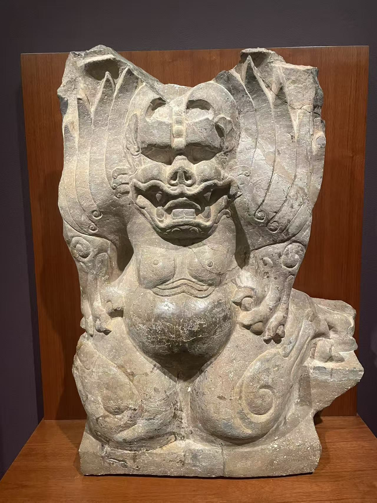
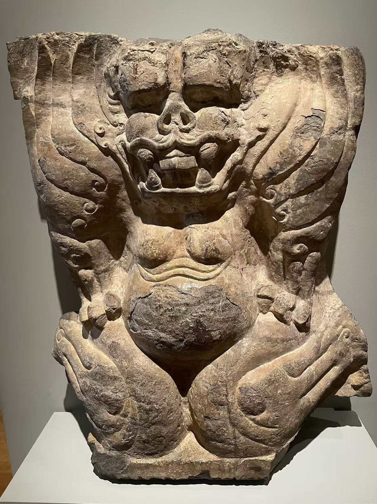
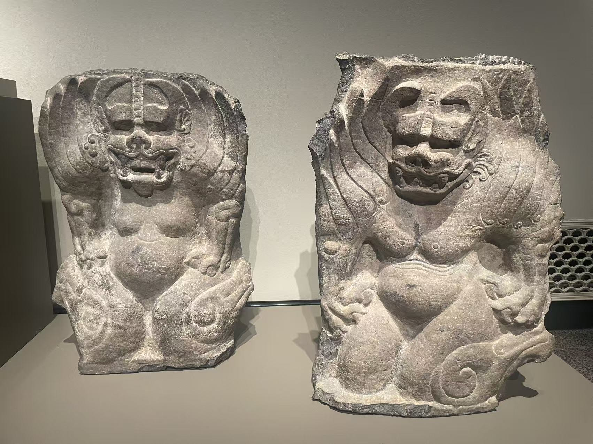
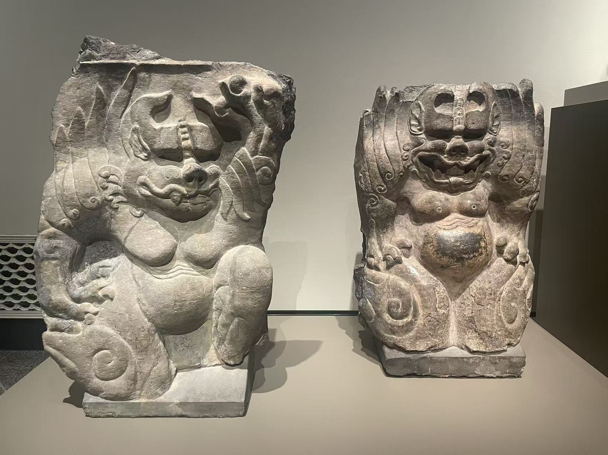
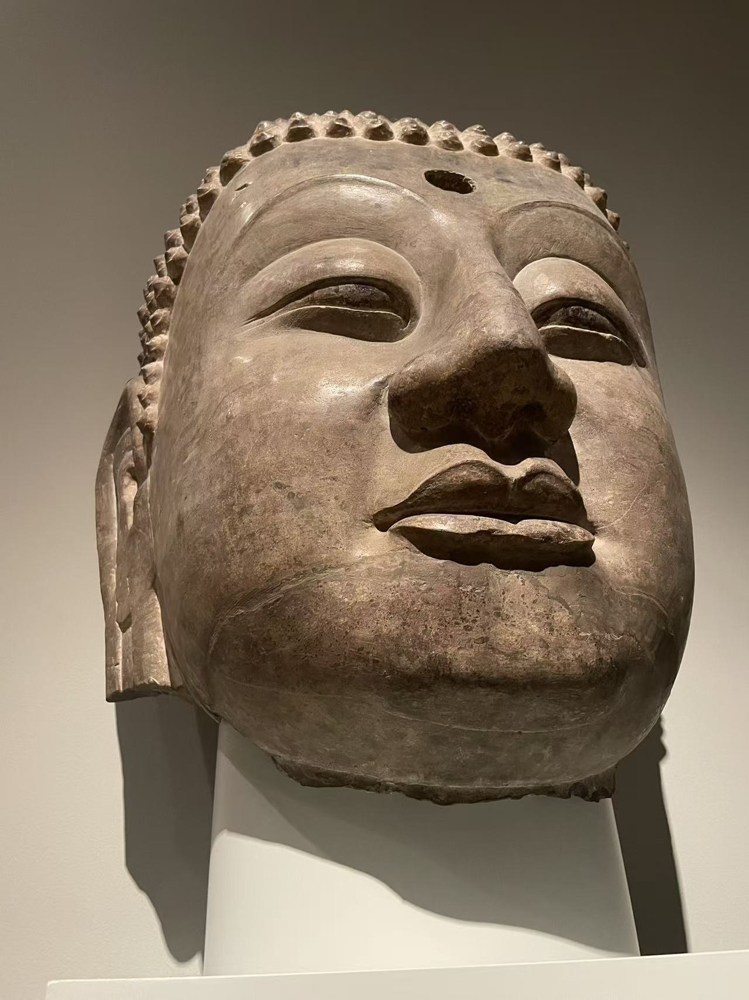
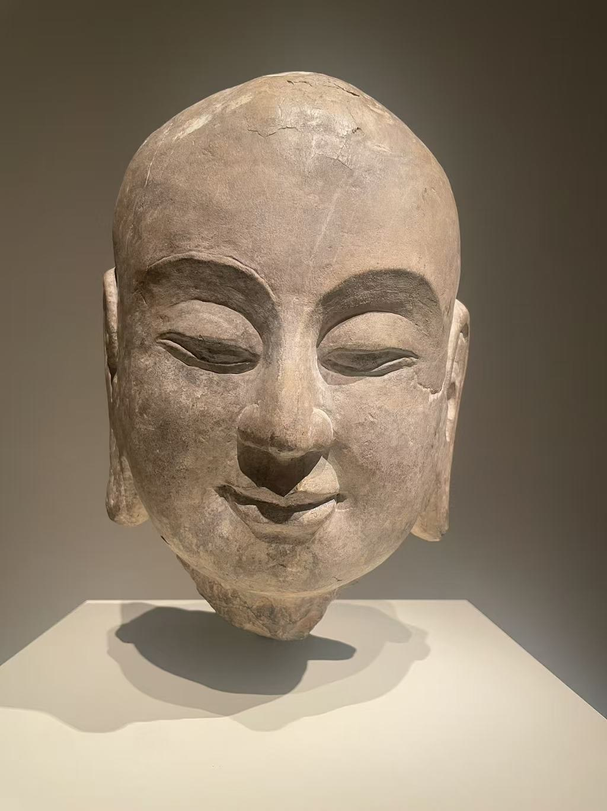
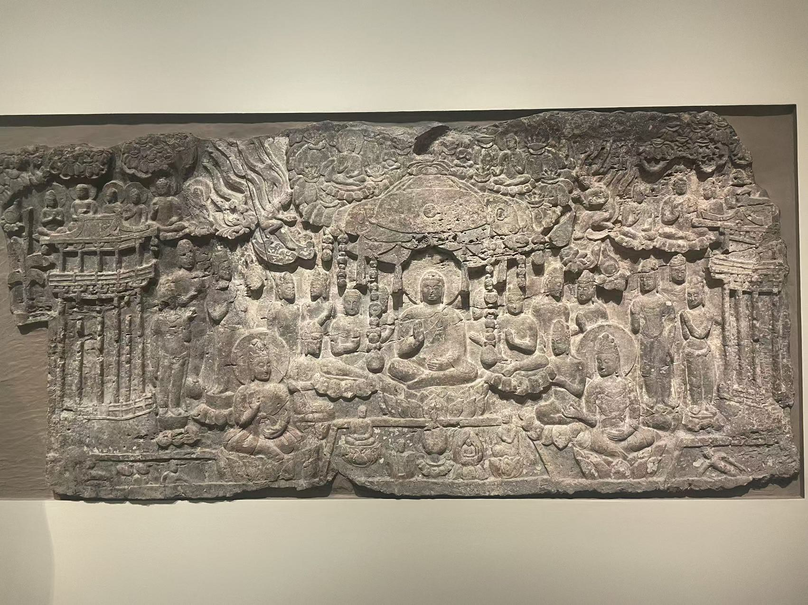
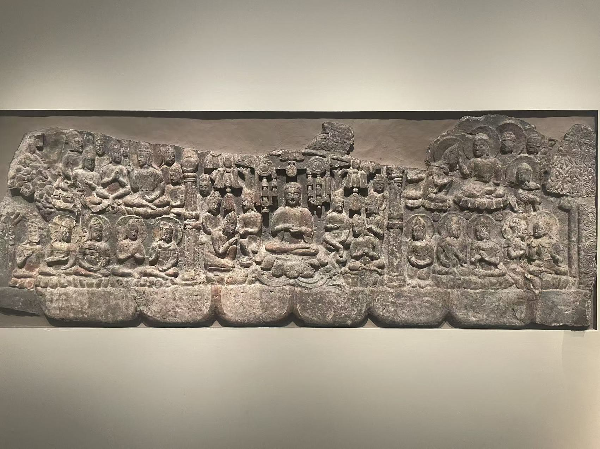
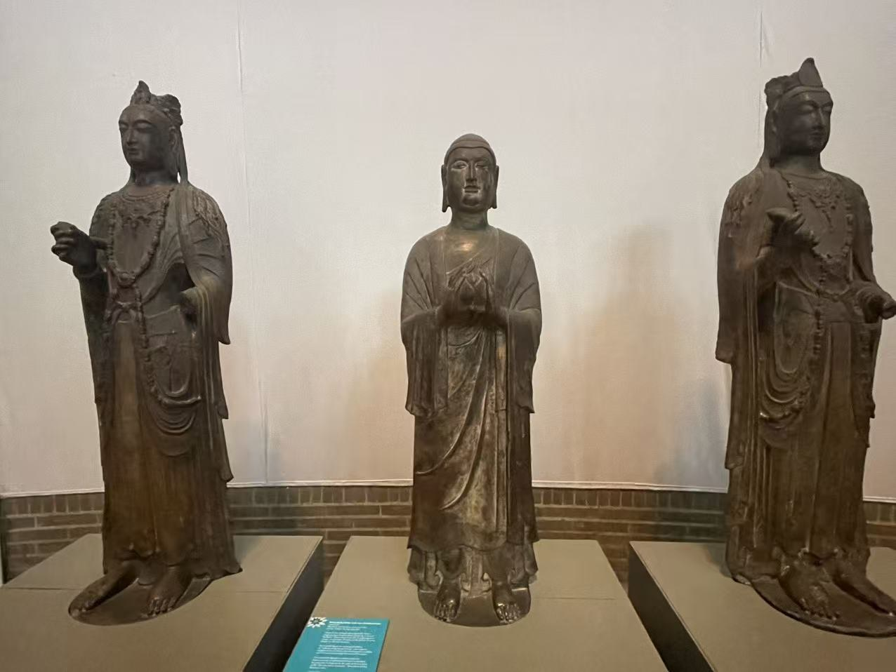
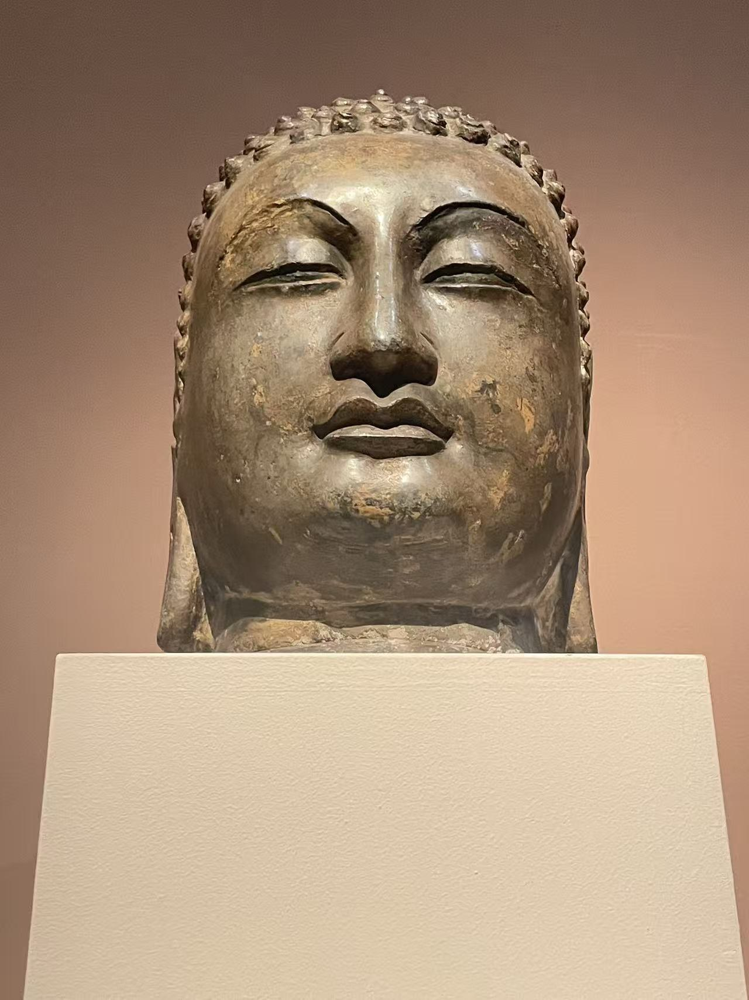

XIANGTANGSHAN / SIDE BY SIDE
把散件放在一起看
从表情、姿态和装饰，逐步看到原来洞窟中的关系。
照片按版面排列，未按实物等比例显示。
佛龛下的六张面孔
同属北响堂北洞的有翼兽，如今分在纳尔逊、克利夫兰与弗利尔。先看手是按膝还是抬起，再看牙齿、腹部与卷翼。平直或折角的石面，还保留了它们与建筑相接的方式。








刻经洞的佛与弟子
克利夫兰和弗利尔的两颗佛头，与传阿难的年轻弟子头像，均按研究归属联系到北响堂南洞。眉眼和口角的转折、发式的不同，比笼统地说“北齐风格”更容易落实到眼前的作品。





南响堂第二窟：从浮雕到立像
华盛顿的群像浮雕与费城的独立立像，共同提示第二窟丰富的图像层次。西方净土的莲池化生、集会图中的树木与人物，以及观音冠中的小佛，分别用不同方式说明身份和场景。两馆现在的陈列位置不等于原来的主坛排列。







南响堂范围内的两颗佛头
大都会与波特兰的两件佛头，都被联系到第三至第六窟范围。比较头顶发卷、耳与下颌的比例，再看眼睑如何与双颊衔接；具体原窟仍未确定。

